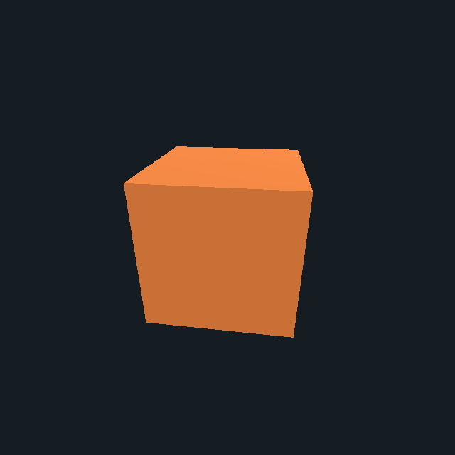
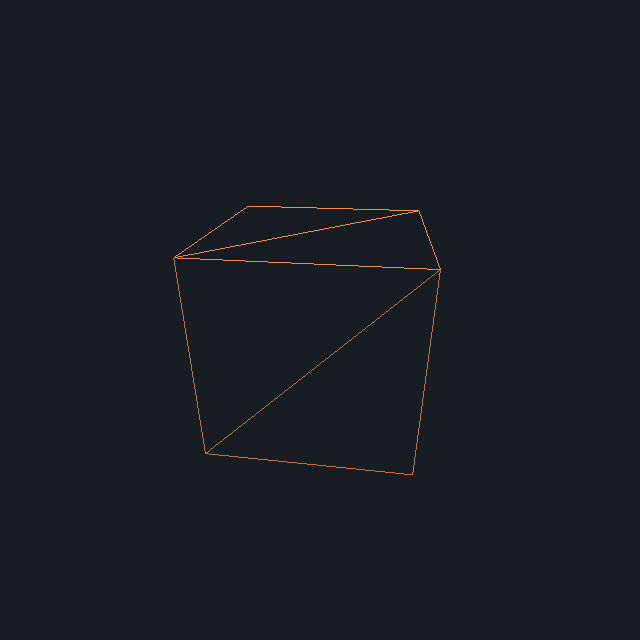
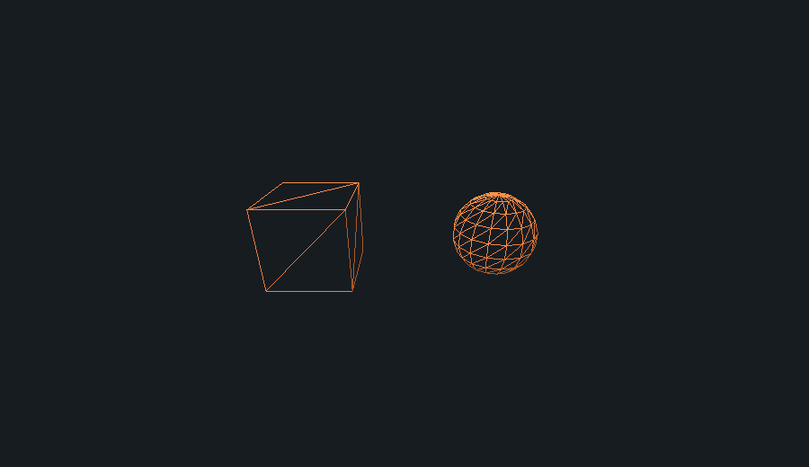

정점 · 모서리 · 삼각형 · 면 · 메시 는 외워야 할 낱말 다섯 개가 아니라 하나가 다음 하나를 만드는 계보입니다. 사각형 한 장을 단계별로 쌓아 보면 그 관계가 한 번에 보이고, 그 다음부터 상자·캐릭터·지형이 전부 같은 이야기가 됩니다.
버튼을 왼쪽부터 눌러 보세요. 바닥에 깔 타일 한 장을 만드는 과정이고, 3D 형상은 크든 작든 전부 이 순서로 만들어집니다.
여기서 놓치기 쉬운 것 두 가지.
① 모서리는 저장되지 않습니다. 정점을 잇는 순서(인덱스)가 정해지면 변은 자동으로 생깁니다. Godot 의 메시 데이터에 “모서리 배열”은 아예 없습니다.
② 사각형 한 장은 삼각형 2개입니다. GPU 는 사각형을 모르기 때문에, 처음부터 삼각형으로 저장해 둡니다.
말로 이해한 것과 눈으로 본 것은 다릅니다. Godot 에디터 3D 뷰포트의 왼쪽 위
Perspective 버튼을 누르면 Display Wireframe 이 있습니다.
아래는 기본 BoxMesh 하나를 네 가지 모드로 직접 렌더해 저장한 화면입니다.



radial 16 · rings 8)
| 모드 | 보이는 것 | 언제 쓰나 |
|---|---|---|
| Display Normal | 평소 화면 | 기본값 |
| Display Wireframe | 삼각형의 변만 선으로 | 형상이 어떻게 쪼개져 있는지 볼 때 |
| Display Overdraw | 겹쳐 그린 만큼 밝아진다 | 반투명·파티클이 몇 겹 쌓였는지 |
| Display Unshaded | 조명을 끄고 색만 | 어두운 것이 조명 탓인지 텍스처 탓인지 가를 때 |
실행 중인 게임에서는 코드로 켭니다. 와이어프레임은 선 데이터 생성을 먼저 켜야 나옵니다.
RenderingServer.set_debug_generate_wireframes(true)
get_viewport().debug_draw = Viewport.DEBUG_DRAW_WIREFRAME # 값 4여기가 이 주제에서 가장 자주 막히는 곳입니다. 상자를 보면 꼭짓점이 8개인데, Godot 에서 세어 보면 정점이 24개로 나옵니다. 오류가 아닙니다.
정점은 위치만 담는 것이 아니라 노멀·UV·색을 함께 담은 속성 묶음입니다. 상자의 한 꼭짓점은 세 면에 걸쳐 있고, 세 면이 향하는 방향이 서로 다릅니다. 속성이 다르면 GPU 에게는 서로 다른 정점이므로, 같은 자리에 정점이 3개 놓입니다.
엔진에서 뽑은 실제 배열 — 위치는 같고 노멀만 다릅니다.
[ 2] pos=(0.5,0.5,0.5) normal=(0,0,1)
[ 8] pos=(0.5,0.5,0.5) normal=(1,0,0)
[16] pos=(0.5,0.5,0.5) normal=(0,1,0)반대로 구는 면이 매끄럽게 이어져 노멀이 연속이므로 정점이 공유됩니다. 그래서 정점보다 삼각형이 훨씬 많아집니다 — 아래 표에서 상자와 정반대입니다.
| 메시 | 기본 파라미터 | 정점 | 인덱스 | 삼각형 | 눈으로 세는 꼭짓점 |
|---|---|---|---|---|---|
QuadMesh | size 1×1 | 4 | 6 | 2 | 4 |
PlaneMesh | size 2×2 · subdivide 0 | 4 | 6 | 2 | 4 |
PlaneMesh | subdivide 1×1 | 9 | 24 | 8 | 9 |
BoxMesh | size 1×1×1 | 24 | 36 | 12 | 8 |
CylinderMesh | radial 64 · rings 4 | 522 | 2,304 | 768 | — |
SphereMesh | radial 64 · rings 32 | 2,210 | 12,672 | 4,224 | — |
“BoxMesh 는 정점 36개”라고 적힌 자료를 보면 인덱스 수를 정점 수로 착각한 것입니다. 36은 인덱스(삼각형 12 × 3), 정점은 24입니다. 이 스킬의 용어 툴팁에도 같은 오기가 있어 이번에 바로잡았습니다.
상자 하나를 두고도 무엇을 물었는지에 따라 답이 전부 다릅니다. 이 표를 외우기보다 물음을 정확히 하는 습관이 낫습니다.
| 물음 | 코드 | 상자의 답 |
|---|---|---|
| 눈으로 보는 꼭짓점은? | 고유 위치 좌표 수 | 8 |
| GPU 가 세는 정점은? | surface_get_arrays(0)[Mesh.ARRAY_VERTEX].size() | 24 |
| 인덱스는? | ...[Mesh.ARRAY_INDEX].size() | 36 |
| 삼각형은? | get_faces().size() / 3 | 12 |
| 모델링에서의 면은? | (도구에서 센다) | 6 |
| 드로우콜은? | get_surface_count() | 1 |
그래서 성능을 이야기할 때는 face 나 폴리곤이 아니라 삼각형(tris) 으로 말합니다. 사각형 면 1,000개는 삼각형 2,000개일 수 있어 예산의 단위가 되지 못합니다.
코드로 메시를 만들었는데 화면에 아무것도 없다면, 대개 감김 방향(winding) 입니다. 삼각형에는 앞뒤가 있고 뒷면은 그리지 않습니다. 앞뒤를 가르는 것은 위치가 아니라 정점을 나열한 순서입니다.
Godot 은 카메라에서 봤을 때 시계 방향으로 감긴 삼각형을 앞면으로 봅니다. 같은 자리에 삼각형 2개를 놓고 순서만 뒤집어 렌더해 픽셀을 읽어 확인했습니다 — 시계 방향은(1,1,1)로 보이고, 반시계 방향은(0,0,0)으로 사라집니다.
| 증상 | 고치는 법 |
|---|---|
| 메시가 통째로 안 보인다 | 인덱스에서 둘째·셋째 번호를 맞바꾼다 — 0,1,2 → 0,2,1 |
| 안쪽에서만 보인다 | 같은 원인 |
| 양면 다 보이게 하고 싶다 | cull_mode = CULL_DISABLED — 🛑 비용 2배. 나뭇잎·천에만 |
| 면은 보이는데 새까맣다 | 노멀이 없다 → SurfaceTool.generate_normals() |
이 페이지는 요약입니다. 배열 상수 13개·서피스와 드로우콜·ArrayMesh 실전 코드는 본문 문서에 있습니다.